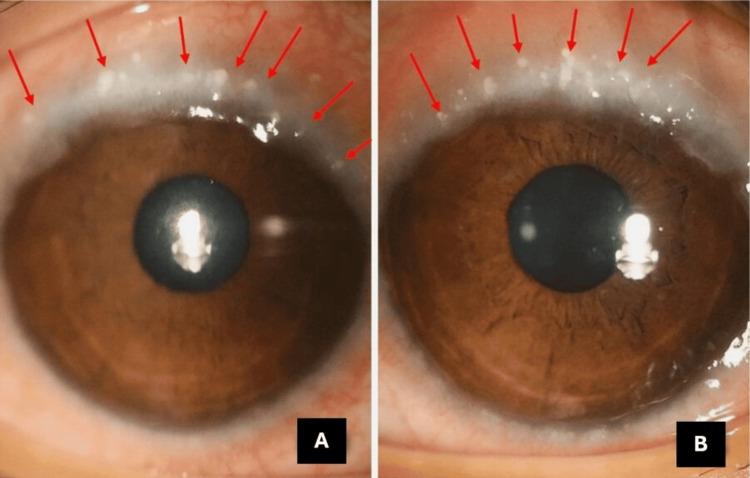
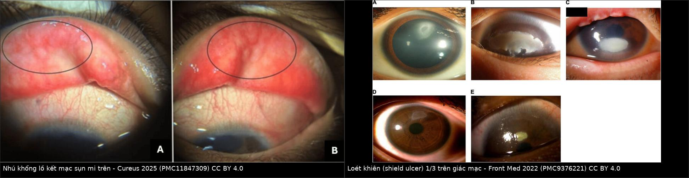
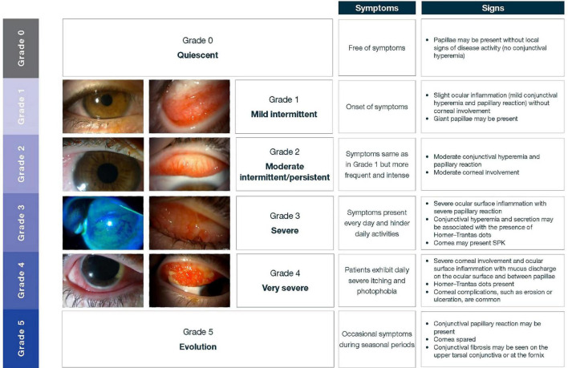
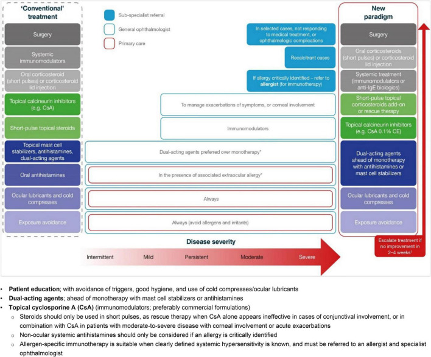
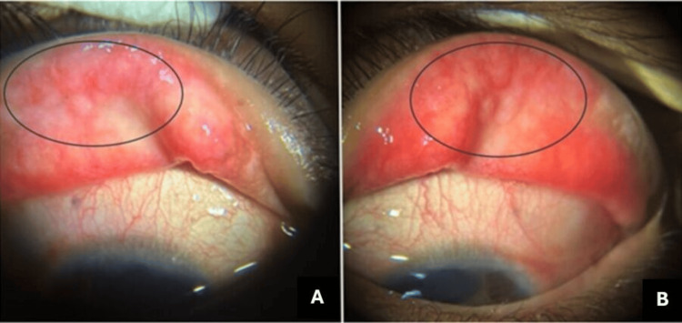
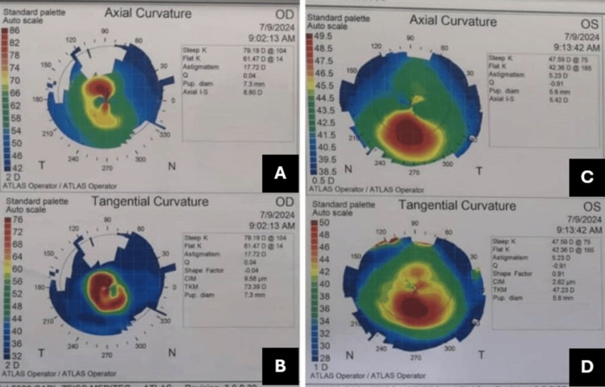
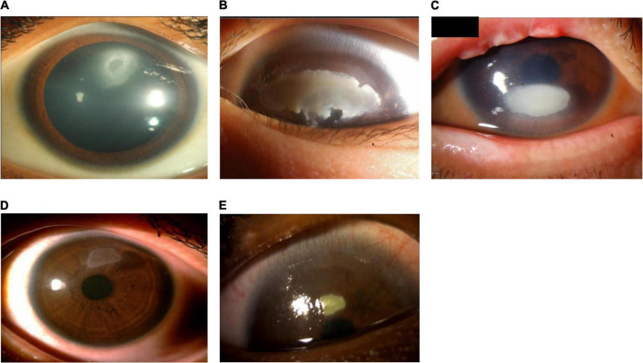

1451 — VKC ở trẻ có keratoconus: kiểm soát viêm và dụi mắt TRƯỚC–SAU CXL / Vernal keratoconjunctivitis with keratoconus in children: controlling inflammation and eye rubbing around cross-linking
Tags: pattern:vkc pattern:ectasia-giac-mac pattern:loet-khien pattern:loi-khuc-xa-khong-deu vung:mat vung:giac-mac vung:ket-mac score:Bonini protocol:CXL protocol:tomography-giac-mac incidentaloma:keratoconus-tre
Mức chắc chắn (certainty): tổng hợp y văn (literature synthesis) — tự biên từ đồng thuận ERN-EYE 2026 về keratoconus trẻ em (PMC13518778, CC BY-NC 4.0), khuyến cáo VKC châu Á 2022 kèm thang Bonini (PMC9376221, CC BY 4.0), ca VKC + keratoconus + glôcôm do corticoid (PMC11847309, CC BY 4.0), 38 mắt CXL ngay khi chẩn đoán ở trẻ có VKC đã kiểm soát (PMC13529036, CC BY 4.0), 723 mắt viêm thấm sau CXL tăng tốc (PMC13529035, CC BY-NC-ND 4.0) và nghiên cứu nhãn áp sau corticoid ở trẻ (PMC13233790, CC BY 4.0). Chưa gắn một ca nguyên văn đơn lẻ của riêng bài.
Bài này là phần "chuẩn bị và theo dõi" của 1414 – Keratoconus ở trẻ Down syndrome. 1414 đã chốt ngưỡng tomography riêng của nhóm Down và dụi mắt 30% / atopy 26% là hai lực đẩy ectasia. Nhưng ở trẻ VKC, câu hỏi không phải "có CXL hay không" mà là "CXL lúc bề mặt còn đang viêm được không, và sau CXL ai giữ được mắt không tái tiến triển" — vì chính corticoid để dập viêm là thứ gây glôcôm thứ phát, còn dụi mắt là thứ làm CXL thất bại.
Câu chốt: Trong VKC, keratoconus không phải biến chứng hiếm: tỷ lệ keratoconus lên tới 26,8% và bất thường tomography tới 71% (PMC13518778); 65–78% bệnh nhân keratoconus có tiền sử viêm kết mạc dị ứng (PMC13518778). Nhưng CXL trên mắt đang viêm hoạt động là chống chỉ định — viêm hoạt động nằm trong danh sách chống chỉ định của đồng thuận ERN-EYE 2026. Khi VKC đã kiểm soát, CXL ngay lúc chẩn đoán ở trẻ an toàn và hiệu quả: 38 mắt, K steep giảm 2,02 D, K đỉnh giảm 2,26 D, khúc xạ cầu tương đương giảm 1,72 D sau 12 tháng, không khác biệt giữa mắt có và không có VKC, chỉ 3 ca thấm vô khuẩn thoáng qua (PMC13529036).
1. Tổng quan bệnh học – cơ chế hình ảnh
- VKC là gì: viêm kết mạc dị ứng mạn, hai bên, theo mùa, chủ yếu ở bé trai 3–15 tuổi; cơ chế IgE (type I) cộng miễn dịch tế bào Th2/Th17 (type IV), với bạch cầu ái toan, MMP-9, periostin trong nước mắt. Khoảng một nửa bệnh nhân không tìm thấy dị nguyên hệ thống — tức không cần test dị ứng dương mới được chẩn đoán (PMC13413424).
- Ba thể lâm sàng: thể sụn mi (tarsal) — nhú khổng lồ hình sỏi cuội ở sụn mi trên; thể rìa (limbal) — nốt Horner–Trantas và phì đại rìa; thể hỗn hợp. Thể nào cũng có thể dẫn tới loét khiên (shield ulcer), sẹo giác mạc, giảm tế bào gốc rìa (LSCD) và keratoconus (PMC9376221).
- TẠI SAO VKC làm giác mạc biến dạng — hai lực cùng lúc: (1) viêm mạn làm tăng MMP-9 và phá collagen → mỏng và yếu giác mạc; (2) dụi mắt tạo tải cơ học lặp lại — chính là yếu tố duy nhất can thiệp được bằng hành vi. Đồng thuận ERN-EYE xếp atopy, dị ứng, VKC, ngứa mắt và dụi mắt vào cùng nhóm yếu tố nguy cơ hành vi – môi trường của keratoconus trẻ em (PMC13518778).
- TẠI SAO keratoconus ở trẻ khác người lớn: trẻ tiến triển nhanh hơn, thời gian tiến triển dài hơn (tới tuổi 30–40 mới ổn định), và mắt đang phát triển thị giác — nên chẩn đoán muộn = nhược thị + sẹo + ghép giác mạc. Đó là lý do Đồng thuận toàn cầu lần 2 khuyến cáo CXL ngay khi chẩn đoán ở trẻ, kể cả khi chưa thấy tiến triển (PMC13518778).
- TẠI SAO CXL cần bề mặt "yên": CXL epi-off bóc toàn bộ biểu mô 8–9 mm và chiếu UV-A 365 nm. Trên giác mạc đang viêm, biểu mô lành chậm, MMP-9 còn cao, và mô đang viêm dễ thấm vô khuẩn/ nhiễm khuẩn. Đồng thuận ERN-EYE liệt kê viêm mắt hoạt động là chống chỉ định của CXL (PMC13518778). Ngược lại, khi VKC đã kiểm soát, kết quả ở trẻ không khác mắt không VKC (PMC13529036).
- Số phải nhớ — kết quả và thất bại của CXL ở trẻ: ổn định sau 10 năm > 95%, tỷ lệ CXL lại 4,2% (thường ở trẻ < 15 tuổi, có dụi mắt và dị ứng, làm lại sau trung bình 36 tháng); 7,9% vẫn tiến triển sau mốc 10 năm; 25% mắt còn lại cần CXL (PMC13518778). Nguy cơ tiến triển sau CXL được báo cáo 4–35% tùy định nghĩa (tăng Kmax/Kmean/Ksteep ≥ 1,0 D) (PMC13518778).
- Số phải nhớ — biến chứng CXL: thấm vô khuẩn 1,4–7,8%; mờ đục/sẹo dai dẳng < 3% (PMC13518778). Trong loạt 723 mắt CXL tăng tốc, viêm thấm sau CXL 1,93% (14/723); tuổi ≤ 16 làm tăng nguy cơ 2,38 lần, còn tiền sử VKC trong loạt này KHÔNG phải yếu tố nguy cơ (RR 0,7) — một phản biện quan trọng với giả định "VKC luôn làm CXL nguy hiểm" (PMC13529035).
- TẠI SAO corticoid là con dao hai lưỡi ở trẻ: corticoid tại chỗ dập viêm nhanh nhưng gây tăng nhãn áp. Ở 158 trẻ sau mổ lác dùng dexamethasone: 82,2% tăng nhãn áp so với nền, đỉnh trung bình 23,1 mmHg, tăng ròng 10 mmHg; theo Armaly: đáp ứng nhẹ < 6 mmHg**, trung bình **6–15 mmHg**, mạnh **> 15 mmHg, và 5% là đáp ứng mạnh (PMC13233790). Ở mắt giác mạc mỏng–dốc, đo nhãn áp còn thấp giả vì CCT mỏng → glôcôm dễ bị bỏ sót.
- TẠI SAO phải đo tomography chứ không chỉ soi đèn khe: keratoconus sớm không thấy bằng mắt; chốt nằm ở độ cao bề mặt sau, Kmax, loạn thị không đều, mỏng khu trú. Ca minh họa được chẩn đoán bằng Atlas 993 với loạn thị bow-tie không đối xứng, trục lệch, dốc–mỏng–không đều (PMC11847309).
- TẠI SAO "đã CXL" không có nghĩa "đã an toàn": ca 18 tuổi trong bài: CXL hai mắt vẫn mờ đi, rồi bùng phát VKC, tự dùng corticoid → nhãn áp 54 mmHg (OD) / 20 mmHg (OS), C/D 0,95 nhạt màu (OD) (PMC11847309). CXL chặn ectasia, không chặn viêm — hai việc khác nhau.
2. Mẫu hình + chẩn đoán phân biệt theo hình thái (gamut)
- Nhú khổng lồ sụn mi trên (thể tarsal): nhú ≥ 1 mm, hình sỏi cuội, đỉnh dẹt, xếp thành dãy; ngứa dữ dội, dính mi buổi sáng, chảy nước mắt. Đây là hình thái hay gặp nhất ở trẻ.
- Thể rìa (limbal): nốt Horner–Trantas trắng ở rìa, phì đại rìa 360°, sợ ánh sáng; nguy cơ loét khiên và giảm thị lực cao hơn.
- Loét khiên (shield ulcer): khuyết biểu mô hình bầu dục 1/3 trên giác mạc, đáy có mảng fibrin trắng (plaque); do nhú khổng lồ cọ xát + chất trung gian viêm. Đây là biến chứng nặng nhất trước khi có sẹo (PMC9376221).
- Keratoconus trên nền VKC: loạn thị không đều tăng dần, đổi kính liên tục, Kmax tăng, mỏng khu trú, dấu Munson/ Rizzuti khi muộn; thường hai bên nhưng không đối xứng.
- Bảng phân biệt nhanh theo "hình thái – vị trí – đối xứng":
| Hình thái | Vị trí tổn thương chính | Đối xứng | Dấu chốt |
|---|---|---|---|
| VKC thể sụn mi | Sụn mi trên | Hai bên | Nhú ≥ 1 mm hình sỏi cuội, đỉnh dẹt |
| VKC thể rìa | Rìa giác mạc | Hai bên | Nốt Horner–Trantas, phì đại rìa |
| Loét khiên | 1/3 trên giác mạc | Một hoặc hai bên | Khuyết biểu mô + mảng fibrin |
| Keratoconus | Trung tâm/cạnh trung tâm | Hai bên, lệch | Kmax tăng, mỏng khu trú, bề mặt sau cao |
| Viêm kết mạc mùa (SAC) | Kết mạc | Hai bên | Ngứa nhẹ, không nhú khổng lồ, không tổn thương giác mạc |
| Viêm kết mạc dị ứng tiếp xúc (GPC do kính) | Sụn mi trên | Hai bên | Nhú nhỏ đều, có tiền sử đeo kính, hết khi ngừng kính |
- Gợi nhớ 5 chữ — "I-T-C-H-Y": Inflammation mạn (MMP-9) · Tarsal nhú khổng lồ · Corneal shield ulcer · High IOP do corticoid · Young + dụi mắt = ectasia tiến triển.

Thể rìa (limbal): viêm rìa 360° mạn kèm nốt Horner–Trantas ở cả hai mắt — (A) phải, (B) trái. Đây là hình thái có nguy cơ loét khiên và giảm thị lực cao hơn thể sụn mi. Nguồn: Cureus 2025 (PMC11847309) Figure 2, CC BY 4.0.3. Bảng so sánh phân biệt (ma trận đối chiếu)
| Thực thể (entity) | Hình ảnh điển hình | Chốt vào (rule-in) | Chốt loại (rule-out) | Gợi ý xác nhận |
|---|---|---|---|---|
| VKC thể sụn mi | Nhú ≥ 1 mm, hình sỏi cuội, đỉnh dẹt, sụn mi trên | Nhú khổng lồ + ngứa theo mùa + bé trai 3–15 tuổi | Nhú nhỏ đều + tiền sử đeo kính → GPC | Soi đèn khe lật mi; Bonini grade |
| VKC thể rìa | Nốt Horner–Trantas, phì đại rìa 360° | Nốt trắng ở rìa + sợ ánh sáng | Rìa bình thường, chỉ nhú sụn → thể tarsal | Soi rìa; nhuộm fluorescein |
| Loét khiên | Khuyết biểu mô 1/3 trên, mảng fibrin trắng, bờ dày | VKC đang hoạt động + khuyết biểu mô + mảng fibrin | Khuyết biểu mô nhỏ, bờ trong, không mảng → trợt do khô/dụi | Nhuộm fluorescein, chụp màu; cấy nếu nghi nhiễm |
| Keratoconus | Kmax tăng, mỏng khu trú, độ cao bề mặt sau, loạn thị không đều | ≥ 2 tham số tomography bất thường + tiến triển theo thời gian | Loạn thị đều, tomography bình thường → loạn thị thông thường | Pentacam/Sirius/Atlas, so sánh cùng máy |
| Viêm giác mạc do vi khuẩn/ nấm | Thấm khu trú, mủ tiền phòng, đau nhiều, không liên quan nhú | Thấm + tiền phòng có mủ + cấy dương | Thấm vô khuẩn thoáng qua sau CXL, cấy âm → thấm do viêm | Cấy/soi tươi trước khi tăng corticoid |
| Glôcôm do corticoid | IOP tăng ≥ 10 mmHg so với nền, C/D lớn dần, thị trường thu hẹp | Tiền sử corticoid + IOP tăng có hồi phục khi ngừng | IOP bình thường nhiều lần, C/D ổn định → loại | Đo IOP cùng máy, cùng thời điểm, bù CCT; chụp OCT RNFL |
| GPC do kính tiếp xúc | Nhú nhỏ, đều, sụn mi trên, ngứa khi đeo | Hết sau ngừng kính 2–4 tuần | Nhú khổng lồ đỉnh dẹt + không đeo kính → VKC | Ngừng kính thử; hỏi tiền sử |

Trái: nhú khổng lồ (macropapillae) ở kết mạc sụn mi trên, khoanh tròn — (A) mắt phải, (B) mắt trái. Phải: loét khiên điển hình ở 1/3 trên giác mạc với mảng fibrin, trên nền VKC nặng. Ảnh ghép letterbox nền đen, không crop/kéo giãn. Nguồn: Cureus 2025 (PMC11847309) Figure 1, CC BY 4.0 (trái); Front Med 2022 (PMC9376221) Figure 4, CC BY 4.0 (phải).Vì sao phải phân độ trước khi chọn thuốc
- Bonini grade 0–4 (PMC12507153, dẫn theo Bonini 2007):
- Grade 0 — yên: không triệu chứng.
- Grade 1 — nhẹ, từng đợt: triệu chứng thoáng qua, không tổn thương giác mạc.
- Grade 2A/2B — trung bình từng đợt/liên tục: triệu chứng + sợ ánh sáng, không hoặc rất ít tổn thương giác mạc.
- Grade 3 — nặng: triệu chứng liên tục + viêm giác mạc chấm nông, nhú khổng lồ và/hoặc nốt Horner–Trantas.
- Grade 4 — rất nặng: triệu chứng dai dẳng ± biến chứng (sẹo giác mạc, LSCD, glôcôm do corticoid, keratoconus).
- Ý nghĩa thực hành: grade 3–4 là lúc phải dùng thuốc ức chế miễn dịch tại chỗ (cyclosporine A 0,05–2%, tacrolimus 0,1% mỡ/dung dịch) để giảm liều corticoid, và là lúc phải đo tomography + nhãn áp vì đã có tổn thương giác mạc (PMC12507153, PMC13025120).

Các mức độ nặng của VKC theo thang Bonini — từ thể nhẹ (nhú, không tổn thương giác mạc) đến thể rất nặng có biến chứng giác mạc. Phân độ quyết định việc dùng corticoid ngắn hay chuyển sang ức chế miễn dịch tại chỗ. Nguồn: Front Med 2022 (PMC9376221) Figure 8, CC BY 4.0 (hình phái sinh do bài gốc công bố lại).4. Protocol + thang phân độ + quy trình CXL
- Đánh giá ban đầu (mọi trẻ VKC): thị lực có/không kính, khúc xạ sau liệt điều tiết, soi đèn khe lật mi trên, nhuộm fluorescein, đo nhãn áp, soi đáy mắt, tomography giác mạc (Pentacam/Sirius/Atlas) + chụp ảnh. Ở trẻ nhỏ không hợp tác: làm dưới gây mê/giãn cách.
- Phân độ Bonini mỗi lần khám (0–4) + ghi nhú (mm), nốt Horner–Trantas (có/không), loét khiên (mm²), Kmax (D), CCT mỏng nhất (µm), IOP (mmHg).
- Điều trị VKC theo bậc (PMC9376221, PMC13025120):
- Tránh dị nguyên + nước mắt nhân tạo + kháng histamin/ổn định tế bào mast — thể nhẹ.
- Corticoid tại chỗ liều ngắn ("pulse") khi bùng phát — luôn có lịch đo IOP; ưu tiên fluorometholone/loteprednol ít gây tăng nhãn áp hơn dexamethasone.
- Ức chế miễn dịch tại chỗ: cyclosporine A 0,05–2% hoặc tacrolimus 0,1% — để cai corticoid; tacrolimus 0,1% mỡ có thể bôi da mi trên như liệu pháp hỗ trợ.
- Ca kháng trị: tiêm corticoid dưới sụn mi (triamcinolone), interferon-α2b, omalizumab/dupilumab (bằng chứng còn hạn chế).
- Ngoại khoa: cắt nhú + ghép màng kết tự thân ở thể sụn mi kháng trị; ghép tế bào gốc rìa khi LSCD.
- Chỉ định CXL ở trẻ có VKC: keratoconus xác nhận trên tomography, và theo đồng thuận làm ngay khi chẩn đoán ở trẻ (kể cả chưa tiến triển), nhưng chỉ khi VKC đã kiểm soát — không loét khiên, không viêm hoạt động, không nhiễm trùng.
- Chuẩn bị trước CXL (checklist):
- Bề mặt yên ≥ 2–4 tuần, không loét khiên, không mảng fibrin.
- IOP đã đo và trong giới hạn; nếu đang dùng corticoid → đo lại sau 2–4 tuần.
- CCT mỏng nhất > 400 µm cho protocol chuẩn; < 400 µm dùng riboflavin ưu trương (hypotonic) / nomogram sub400 theo đồng thuận (PMC13518778).
- Bố mẹ/trẻ hiểu và cam kết: không dụi mắt, tái khám đúng hẹn, không tự mua corticoid.
- Protocol CXL: epi-off Dresden 3 mW/cm² × 30 phút = 5,4 J/cm², riboflavin 0,1% nhỏ 20–30 phút; hoặc tăng tốc 9 mW/cm² × 10 phút hoặc 18 mW/cm² × 5 phút. Trẻ < 12–14 tuổi hoặc không hợp tác → gây mê toàn thân.
- Sau CXL: kính áp tròng băng 3–5 ngày, kháng sinh + corticoid ngắn ngày, giảm đau; khám 1 tuần – 1 tháng – 3 tháng – 6 tháng, tomography lại 6 tháng; tiếp tục kiểm soát VKC và dụi mắt.
- Theo dõi dài hạn: tomography mỗi 6–12 tháng tới khi ổn định; CXL lại nếu Kmax/Ksteep tăng ≥ 1,0 D; mắt còn lại khám cùng lịch (25% sẽ cần CXL).

Sơ đồ điều trị VKC theo bậc: từ kháng histamin/ổn định tế bào mast → corticoid ngắn → ức chế miễn dịch tại chỗ (CsA/tacrolimus) → sinh học/ngoại khoa. Điểm cần nhớ: corticoid là bậc tạm, không phải bậc duy trì. Nguồn: Front Med 2022 (PMC9376221) Figure 1, CC BY 4.0.flowchart TD
A["Trẻ VKC: ngứa, nhú khổng lồ, sợ ánh sáng"] --> B["Bonini grade + soi đèn khe + tomography + IOP"]
B --> C{"Có loét khiên hoặc viêm hoạt động ?"}
C -->|"Có"| D["Điều trị bùng phát: corticoid ngắn + CsA/tacrolimus, đo IOP mỗi 2-4 tuần"]
C -->|"Không"| E{"Tomography: keratoconus ?"}
D --> E
E -->|"Không"| F["Duy trì kiểm soát dị ứng + chống dụi mắt, khám 3-6 tháng"]
E -->|"Có"| G["Tư vấn CXL + cam kết không dụi mắt"]
G --> H{"Bề mặt yên >= 2-4 tuần, CCT > 400 µm ?"}
H -->|"Chưa"| D
H -->|"Rồi"| I["CXL epi-off (Dresden hoặc tăng tốc), gây mê nếu trẻ nhỏ"]
I --> J["Theo dõi 1 tuần - 1 - 3 - 6 tháng, tomography 6 tháng"]
J --> K{"Kmax/Ksteep tăng >= 1,0 D ?"}
K -->|"Có"| L["Cân nhắc CXL lại; kiểm tra dụi mắt + VKC"]
K -->|"Không"| M["Tiếp tục kiểm soát VKC, khám mắt còn lại"]
D --> N["Cảnh báo: không tự dùng corticoid - nguy cơ glôcôm"]
5. Biến thể bình thường và cạm bẫy
- Cạm bẫy "mắt đỏ đã CXL = thất bại CXL": ca 18 tuổi vẫn tiến triển và mờ sau CXL vì VKC bùng phát + dụi mắt + corticoid không kiểm soát, không phải vì CXL hỏng (PMC11847309). Trước khi kết luận thất bại, phải hỏi dụi mắt, tuân thủ, bùng phát dị ứng.
- Cạm bẫy nhãn áp "bình thường" ở mắt mỏng: CCT mỏng làm IOP đo thấp giả; ở keratoconus không được tin một lần đo. Phải đo cùng máy, cùng thời điểm trong ngày, so với nền trước corticoid, và soi đĩa thị + OCT RNFL.
- Cạm bẫy "nhú nhỏ = không phải VKC": GPC do kính cũng nhú sụn mi trên nhưng nhú nhỏ, đều, và hết sau ngừng kính 2–4 tuần; hỏi tiền sử đeo kính trước khi gắn nhãn VKC.
- Cạm bẫy "thấm sau CXL là nhiễm trùng": phần lớn thấm vô khuẩn (1,4–7,8%), đáp ứng corticoid; nhưng không được tăng corticoid mù khi chưa cấy/soi tươi — nhiễm trùng trên giác mạc đang dùng corticoid là tình huống mất mắt.
- Cạm bẫy "VKC làm CXL nguy hiểm hơn": loạt 723 mắt cho thấy tiền sử VKC không tăng nguy cơ viêm thấm (RR 0,7), còn tuổi ≤ 16 tăng 2,38 lần (PMC13529035). Vậy tuổi và tuân thủ quan trọng hơn nhãn "VKC".
- Cạm bẫy "CXL xong là hết phải theo dõi": 7,9% tiến triển sau 10 năm, 4,2% phải CXL lại (trung bình 36 tháng), 25% mắt còn lại cần CXL (PMC13518778) — không có mốc "khỏi".
- Cạm bẫy "trẻ nhỏ không đo được nên bỏ qua": không đo được thị lực/tomography tại giường không có nghĩa không có bệnh; với VKC nặng + nhú khổng lồ, chỉ định khám dưới gây mê để không bỏ lỡ loét khiên/keratoconus.
- Biến thể "keratoconus cận lâm sàng": tomography bất thường nhưng soi đèn khe bình thường — vẫn phải theo dõi 3–6 tháng vì 71% VKC có bất thường tomography (PMC13518778).
- Cạm bẫy thuốc: tacrolimus/cyclosporine tại chỗ gây bỏng rát lúc đầu → giảm tuân thủ; giải thích trước và bắt đầu 1 lần/ngày rồi tăng.
6. Tự lượng giá — Blind Quiz
Ca 1 — Bé gái 14 tuổi, ngứa mắt hai bên theo mùa, sợ ánh sáng, đổi kính liên tục. Lật mi trên thấy hình dưới. Hỏi: chẩn đoán, phân độ, và hai việc phải làm ngay.

Bấm để hiện đáp án
- VKC thể sụn mi với nhú khổng lồ đỉnh dẹt (khoanh tròn) ở cả hai mắt; sợ ánh sáng + đổi kính liên tục → nghi tổn thương giác mạc/keratoconus.
- Phân độ Bonini: có nhú khổng lồ + viêm giác mạc chấm nông → grade 3; nếu đã có sẹo/keratoconus → grade 4.
- Hai việc ngay: (1) tomography giác mạc tìm keratoconus; (2) đo nhãn áp + soi đèn khe nhuộm fluorescein tìm loét khiên, trước khi kê corticoid.

Bản đồ giác mạc sau CXL — (A,B) mắt phải tiến triển rõ, (C,D) mắt trái tiến triển ít; minh họa rằng CXL không thay thế kiểm soát viêm và dụi mắt. Nguồn: Cureus 2025 (PMC11847309) Figure 3, CC BY 4.0.- Nguồn: Cureus 2025 (PMC11847309) Figure 1, CC BY 4.0.
Ca 2 — Bé trai 11 tuổi VKC nặng, đau mắt phải 5 ngày, không chấn thương. Giác mạc 1/3 trên có khuyết biểu mô hình bầu dục, đáy trắng đục.

- Hỏi: chẩn đoán? Vì sao không được coi là loét nhiễm khuẩn thông thường? Điều trị và điều gì phải kiểm tra cùng lúc?
Bấm để hiện đáp án
- Loét khiên (shield ulcer) trên nền VKC: vị trí 1/3 trên đúng nơi nhú khổng lồ cọ xát, đáy có mảng fibrin (plaque).
- Không phải loét nhiễm khuẩn thông thường vì cơ chế cọ xát + viêm, không có mủ tiền phòng; nhưng vẫn phải cấy/soi tươi vì loét khiên có thể bội nhiễm và vì corticoid sẽ được dùng.
- Điều trị: corticoid tại chỗ mạnh ngắn ngày + ức chế miễn dịch (CsA/tacrolimus); bóc mảng fibrin nếu dày; kiểm soát nhú (cắt nhú + ghép màng kết nếu kháng trị); chống dụi mắt.
- Kiểm tra cùng lúc: nhãn áp (corticoid), tomography (keratoconus), mắt còn lại.
- Nguồn: Front Med 2022 (PMC9376221) Figure 4, CC BY 4.0.
Ca 3 — Bé 15 tuổi VKC, đã CXL 8 tháng, thị lực giảm dần, nhãn áp 32 mmHg, C/D 0,8. Mẹ cho biết cháu "nhỏ thuốc đỏ" mỗi lần ngứa.
Bấm để hiện đáp án
- Glôcôm do corticoid (không phải VKC tiến triển): dùng corticoid không giám sát + IOP 32 mmHg + C/D 0,8.
- Xử trí: ngừng corticoid ngay, khởi đầu thuốc hạ nhãn áp, chuyển sang CsA/tacrolimus để kiểm soát VKC, đo IOP + OCT RNFL + thị trường định kỳ; nếu không hồi phục → can thiệp lọc/thủ thuật.
- Bài học từ ca thật: bệnh nhân bỏ tái khám từ 14 tuổi và tự dùng corticoid → IOP 54 mmHg, C/D 0,95 (PMC11847309). Giáo dục bệnh nhân/ gia đình là một phần của điều trị.
Bài liên quan chéo
- 1414 – Keratoconus ở trẻ Down syndrome: ngưỡng tomography riêng, CXL
- 1412 – Đo khúc xạ lý liệt ở trẻ đặc biệt
- 1438 – Viêm màng bồ đào giao cảm — hàng phân biệt viêm nội nhãn
- 442 – Glôcôm và OCT RNFL — theo dõi glôcôm do corticoid
- 446 – Phù hoàng điểm do viêm — biến chứng viêm nội nhãn
Không dùng để chẩn đoán độc lập khi chưa có người hướng dẫn.